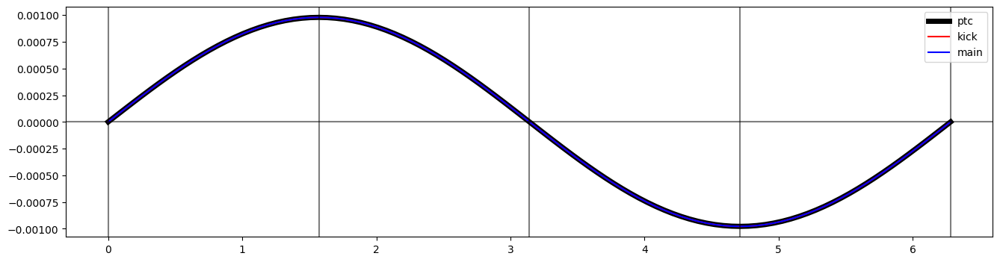

Example-12: TM010 cavity factory
In this example cavity factory is illustrated.
The TM010 cavity hamiltonian is:
$ \begin{align} & H(q_x, q_y, q_s, p_x, p_y, p_s; s) = \frac{p_s}{\beta} - t(s)(q_x p_y - q_y p_x) - (1 + h(s) q_x) \left(\sqrt{P_s^2 - P_x^2 - P_y^2 - \frac{1}{\beta^2 \gamma^2}} + a_s(q_x, q_y, q_s; s)\right) \\ & \\ & P_s = p_s + 1/\beta - \varphi(q_x, q_y, q_s; s) \\ & P_x = p_x - a_x(q_x, q_y, q_s; s) \\ & P_y = p_y - a_y(q_x, q_y, q_s; s) \\ \\ & (a_x, a_y, a_s) = (0, 0, \frac{q E}{P \omega} J(k r) \cos(k\left(\frac{s}{\beta} - q_s \right) + \phi))\\ & r^2 = q_x^2 + q_y^2 & \\ & \varphi = 0 \\ & t = h = 0 \\ \end{align} $
The constructed element signature is:
# kick
def cavity(qsps:Array, length:Array, kn:Array, ks:Array) -> Array:
...
# main
def cavity(qsps:Array, length:Array, kn:Array, ks:Array) -> Array:
...
Note, by default only energy kick is performed and cavity has zero length.
[1]:
import jax
from jax import jit
from jax import jacrev
from elementary.util import ptc
from elementary.util import CL
from elementary.util import ME
from elementary.util import beta
from elementary.util import gamma
from elementary.util import rigidity
from elementary.cavity import cavity_factory
from matplotlib import pyplot as plt
jax.numpy.set_printoptions(linewidth=256, precision=12)
[2]:
# Set data type
jax.config.update("jax_enable_x64", True)
[3]:
# Set device
device, *_ = jax.devices('cpu')
jax.config.update('jax_default_device', device)
[4]:
# Define cavity elements
gamma = 1000.0
element_kick = jit(cavity_factory(rigidity(beta(gamma), gamma, ME, 1), kind='kick', beta=beta(gamma), gamma=gamma, order=2**1, iterations=100))
element_main = jit(cavity_factory(rigidity(beta(gamma), gamma, ME, 1), kind='main', beta=beta(gamma), gamma=gamma, order=2**1, iterations=100))
[5]:
# Set zero initial condition
(q_x, q_y, q_s) = qs = jax.numpy.array([0., 0., 0.])
(p_x, p_y, p_s) = ps = jax.numpy.array([0., 0., 0.])
qsps = jax.numpy.hstack([qs, ps])
[6]:
# Set parameters
length = jax.numpy.float64(1.0)
voltage = jax.numpy.float64(5.0E+5)*1E-6
frequency = jax.numpy.float64(2.0E+08)*1E-6
lag = jax.numpy.float64(90*jax.numpy.pi/180)
[7]:
# Compute energy gain
print((1E+6*voltage)/(rigidity(beta(gamma), gamma, ME, 1)*CL)*jax.numpy.sin(lag))
0.0009784760796965218
[8]:
# Compare with PTC
print(element_kick(qsps, voltage, lag))
print(element_main(qsps, length, voltage, frequency, lag))
print(ref := ptc(qsps, 'rfcavity', {'l': float(length), 'no_cavity_totalpath': 'true', 'n_bessel': 10, 'freq': float(frequency), 'volt': float(voltage), 'lag': float(lag/(2*jax.numpy.pi))}, gamma=gamma))
print()
[0. 0. 0. 0. 0. 0.00097847608]
[-1.082847985127e-18 -1.082847985127e-18 4.885907984818e-10 -1.490078219212e-21 -1.490078219212e-21 9.784760807539e-04]
[0.000000000000e+00 0.000000000000e+00 4.887602574200e-10 0.000000000000e+00 0.000000000000e+00 9.784760810177e-04]
[9]:
# Differentiability
matrix = jax.jacrev(element_main)(qsps, length, voltage, frequency, lag)
print(matrix)
print(jax.numpy.linalg.det(matrix))
[[ 9.989171520149e-01 -5.721517742631e-20 -4.295716685495e-18 9.995109978134e-01 -1.059978537520e-20 1.082475290913e-18]
[-5.721517742631e-20 9.989171520149e-01 -4.295716685495e-18 -1.059978537520e-20 9.995109978134e-01 1.082475290913e-18]
[-1.493632396068e-21 -1.493632396068e-21 9.999999978367e-01 1.082158489132e-18 1.082158489132e-18 9.985358733929e-07]
[-1.490078219213e-06 6.105199573872e-20 -8.596042621954e-18 1.001082530852e+00 7.757678047506e-21 1.485053344709e-21]
[ 6.105199573872e-20 -1.490078219213e-06 -8.596042621954e-18 7.757678047506e-21 1.001082530852e+00 1.485053344710e-21]
[-8.586740834050e-18 -8.586740834050e-18 -6.769838121622e-12 -4.291472216269e-18 -4.291472216269e-18 1.000000002163e+00]]
1.0
[10]:
# Scan initial lag
lags = 2*jax.numpy.pi*jax.numpy.linspace(0.0, 1.0, 101) ;
out_kick = [element_kick(qsps, voltage, lag) for lag in lags]
*_, out_kick = jax.numpy.stack(out_kick).T
out_main = [element_main(qsps, length, voltage, frequency, lag) for lag in lags]
*_, out_main = jax.numpy.stack(out_main).T
out_ptc = [ptc(qsps, 'rfcavity', {'no_cavity_totalpath': 'true', 'l': float(length), 'n_bessel': 10, 'freq': float(frequency), 'volt': float(voltage), 'lag': float(lag/(2*jax.numpy.pi))}, gamma=gamma) for lag in lags]
*_, out_ptc = jax.numpy.stack(out_ptc).T
[11]:
# Plot energy change vs lag
plt.figure(figsize=(16, 4))
plt.plot(lags, out_ptc, color='black', label='ptc', lw=5)
plt.plot(lags, out_kick, color='red', label='kick')
plt.plot(lags, out_main, color='blue', label='main')
plt.gca().axhline(0, color='black', alpha=0.5)
plt.gca().axvline(0, color='black', alpha=0.5)
plt.gca().axvline(jax.numpy.pi/2, color='black', alpha=0.5)
plt.gca().axvline(jax.numpy.pi, color='black', alpha=0.5)
plt.gca().axvline(3*jax.numpy.pi/2, color='black', alpha=0.5)
plt.gca().axvline(2*jax.numpy.pi, color='black', alpha=0.5)
plt.legend()
plt.show()

[12]:
# Set non-zero initial condition
(q_x, q_y, q_s) = qs = jax.numpy.array([0., 0., -0.001])
(p_x, p_y, p_s) = ps = jax.numpy.array([0.001, 0.001, 0.0001])
qsps = jax.numpy.hstack([qs, ps])
[13]:
# Set parameters
length = jax.numpy.float64(1.0)
voltage = jax.numpy.float64(5.0E+5)*1E-6
frequency = jax.numpy.float64(2.0E+08)*1E-6
lag = jax.numpy.float64(90*jax.numpy.pi/180)
[14]:
# Compute energy gain
print((1E+6*voltage)/(rigidity(beta(gamma), gamma, ME, 1)*CL)*jax.numpy.sin(lag))
0.0009784760796965218
[15]:
# Compare with PTC
print(element_kick(qsps, voltage, lag))
print(element_main(qsps, length, voltage, frequency, lag))
print(ref := ptc(qsps, 'rfcavity', {'l': float(length), 'no_cavity_totalpath': 'true', 'n_bessel': 10, 'freq': float(frequency), 'volt': float(voltage), 'lag': float(lag/(2*jax.numpy.pi))}, gamma=gamma))
print()
[ 0. 0. -0.001 0.001 0.001 0.00107847608]
[ 0.00099941211 0.00099941211 -0.001000998234 0.001001086708 0.001001086708 0.001078463202]
[ 0.000999412549 0.000999412549 -0.001000998237 0.001000001075 0.001000001075 0.001078466761]